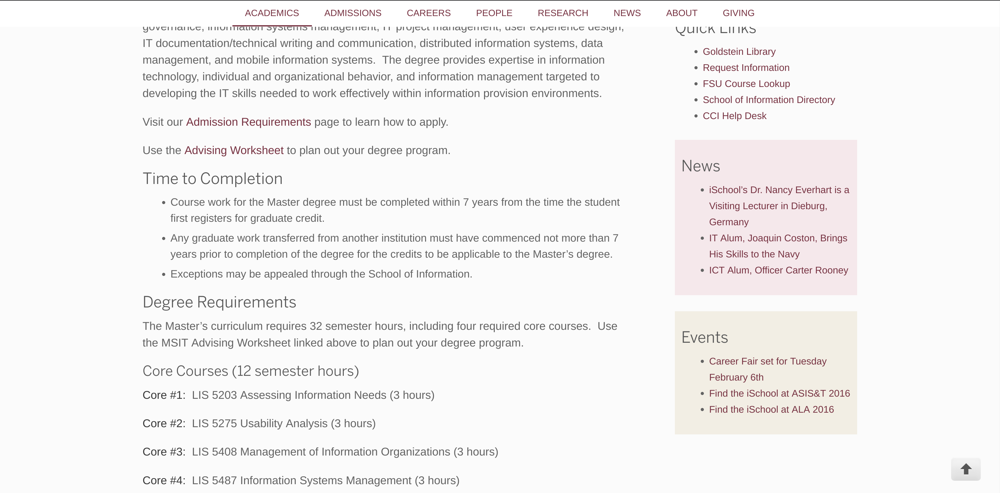

Ideation Notebook for LIS4910
This is the start of the semester long ideation Notebook Assignment
Ideation notebook for June 22nd
 My main issue is with the Information Technology Graduate Program webpage. My issue with this webpage are minor overall but I think the main issue with it is with how long and how much scrolling is needed to read and understand this page. These pages are very important with an overall view of courses needd by students and I think a very simple way to clean this up would be to use a table to to condense this information to be read at a glance. The picture I captured includes the upper section of the page and has other issues I will expand on as well, but the first issue I want to focus on is the bottom section of the page that has the core classes laid out. This part isn't as bad as the bottom non-core courses where the list just seems to continue on for forever making it to where the viewer cant see a brief overview of the courses all at once. This is an issue because when students normal are choosing their courses they normal will look at this page and to pick from such a list can be annoying to either search for the class or continually scroll up and down to find the course and its course ID. My solution to this would be to throw all of the information into a condensed two column table that has a header of whether or not the course is 3 hour course and then the courses split between the two columns to minimize the scrolling a bit more.
The other issues I have with this webpage is mainly minor layout such as the tabbing of the lists below the Quick Links, News, and Events sections at the top right of the picture. I also have slight issue with the lack of color, which is understandable with the page being a more professional page, but I think this makes this page not only to bright but makes the webpage dull and not stand out at all to any other pages that have more colors.